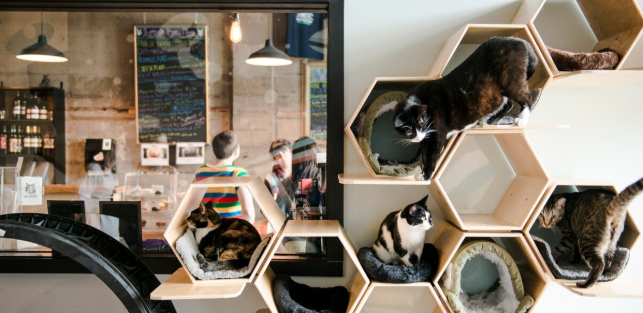
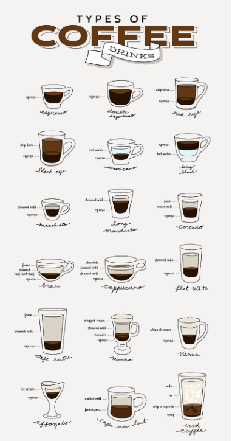

The purpose of this webpage is to represent the special
importance of cats and coffee to our client, Noël. The artifact
that we received from Noël was an mug that symbolizes an array of
different meanings to her life. Around five years ago she was gifted
this mug by her friend, 11th grade Geometry teacher, Donald Puathasnanon.
Noël truly loves cats, her favorite breed being Red Tabby cats. She used to
have a childhood cat that has been with her through many years of her life.
Additionally she enjoys many different types of coffees such as Americanos,
Vanilla and Green Tea Lattes, but she enjoys cups of hot coffee the most.
We incorporated the information given to us and decided to implement the
importance of cat cafés in general as well.


IMPORTANCE OF CATS & COFFEE
Caturday Cat Café & LOUNGE
CAT CAFES IN LOS ANGELES
In Los Angeles, there has become this new craze about the combination between cats and coffee.
People seem to be enjoying drinking there coffee and also being around cats at the same time.
If you had wanted to experience coffee and cats at the same time then you should check out the image hyperlinks to the left and right of this text.